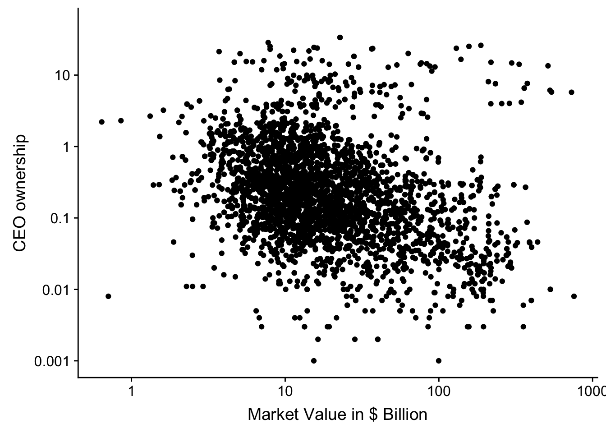
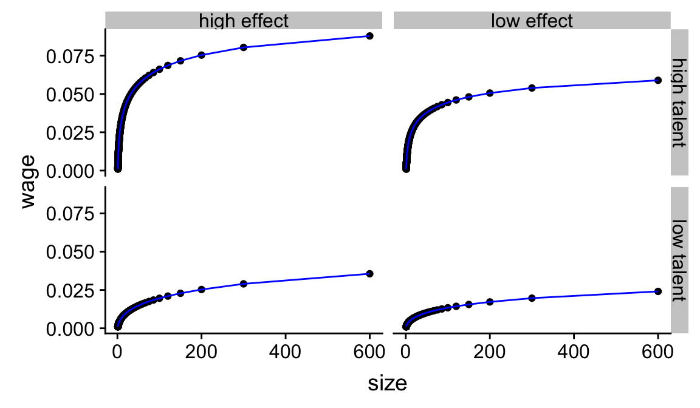

Chapter 8 Control Variables
library(DiagrammeR)
grViz("
digraph libby_boxes{
graph [fontsize = 18, layout = 'dot']
node [shape = box, group = 'cause_group']
cause [label = 'Performance']
m_cause [label = 'Change_Log_Value']
node [shape = box, group = 'effect_group']
effect [label = 'Pay']
m_effect [label = 'Change_Log_Wealth']
controls
cause -> effect [label = '(1)']
m_cause -> m_effect [label = '(2)']
cause -> m_cause [label = ' (3) ']
effect -> m_effect [label = ' (4) ']
m_effect -> controls [dir=back, label = '(5)']
subgraph{
rank = same; cause; effect;
}
subgraph{
rank = same; m_cause; m_effect; controls;
}
}
")Figure 8.1: (ref:libby-boxes)
8.1 The data
us_comp <- readRDS("data/us-compensation.RDS") %>%
rename(total_comp = tdc1, shares = shrown_tot_pct)
us_value <- readRDS("data/us-value.RDS") %>%
rename(year = fyear, market_value = mkvalt)
us_firm <- readRDS("data/us-company.RDS") %>%
mutate(comp_age = dmy("31-12-2018") - begdat)
combined <- left_join(us_comp, us_firm, by = "cusip") %>%
left_join(us_value, by = c("year", "gvkey")) %>%
mutate(ipo_ceo = I(becameceo < begdat),
ipo_employee = I(joined_co < begdat),
wealth = shares * market_value / 100) %>%
mutate(ipo_employee = if_else(is.na(ipo_employee), ipo_ceo,
ipo_employee)) %>%
mutate(ipo = ifelse(ipo_ceo, "ceo",
ifelse(ipo_employee, "employee", "none")))
combined_change <- group_by(combined, gvkey) %>%
arrange(year) %>%
mutate(
delta_total = log(total_comp) - log(lag(total_comp)),
delta_wealth = log(wealth) - log(lag(wealth)),
delta_value = log(market_value) - log(lag(market_value))) %>%
filter(!is.infinite(delta_total),
!is.infinite(delta_value),
!is.infinite(delta_wealth))8.2 Controlling for measurement error
8.2.1 Directed Acyclical Graph (or DAG)
grViz("
digraph measurement_error{
node [shape = box]
x
y
z
x -> y
z -> y
}
")8.2.2 Simulation
set.seed(12345)
obs = 500
x <- rnorm(n = obs); z <- rnorm(n = obs)
y <- rnorm(n = obs, mean = 1 * x + 10 * z, sd = 10)
d <- tibble(y = y, x = x, z = z)
yx <- lm(y ~ x, data = d)
yxz <- lm(y ~ x + z, data = d)
pretty_ols(yx)| Estimate | Std. Error | t value | Pr(>|t|) | |
|---|---|---|---|---|
| (Intercept) | -0.39 | 0.64 | -0.61 | 0.54 |
| x | 1.7 | 0.64 | 2.6 | 0.0096 |
pretty_ols(yxz)| Estimate | Std. Error | t value | Pr(>|t|) | |
|---|---|---|---|---|
| (Intercept) | -0.49 | 0.45 | -1.1 | 0.28 |
| x | 1.7 | 0.45 | 3.8 | 0.00018 |
| z | 9.9 | 0.45 | 22 | 5.2e-76 |
8.2.3 Real data
meas_data <- select(combined, market_value, shares, ipo) %>%
filter(complete.cases(.))
ownership <-
ggplot(data = meas_data,
aes(x = market_value/1000, y = shares + 0.001)) +
geom_point() +
scale_x_continuous(trans = "log",
breaks = scales::log_breaks(n = 5, base = 10),
labels = function(x) prettyNum(x, dig = 2)) +
scale_y_continuous(trans = "log",
breaks = scales::log_breaks(n = 5, base = 10),
labels = function(x) prettyNum(x, dig = 2),
limits = c(NA, 50)) +
labs(y = "CEO ownership", x = "Market Value in $ Billion")
print(ownership)## Warning: Removed 4 rows containing missing values (geom_point).
form <- log(shares + 0.001) ~ log(market_value/1000)
base <- lm(form, data = combined)
form_error <- update(form, . ~ . + ipo_ceo + ipo_employee)
error <- lm(form_error, data = combined)
combined %>% select(ipo_ceo, ipo_employee, year) %>%
group_by(year) %>%
summarise(
ipo_both = mean(ipo_ceo * ipo_employee, na.rm = T),
ipo_ceo_only = mean(ipo_ceo * (1 - ipo_employee),
na.rm = T),
ipo_empl_only = mean((1 - ipo_ceo) * ipo_employee,
na.rm = T),
ipo_none = mean((1 - ipo_ceo) * (1 - ipo_employee),
na.rm = T)
) %>% knitr::kable(digits = 2)| year | ipo_both | ipo_ceo_only | ipo_empl_only | ipo_none |
|---|---|---|---|---|
| 2011 | 0.16 | 0 | 0.08 | 0.77 |
| 2012 | 0.17 | 0 | 0.08 | 0.75 |
| 2013 | 0.17 | 0 | 0.07 | 0.76 |
| 2014 | 0.15 | 0 | 0.07 | 0.78 |
| 2015 | 0.14 | 0 | 0.05 | 0.81 |
| 2016 | 0.13 | 0 | 0.05 | 0.82 |
| 2017 | 0.12 | 0 | 0.05 | 0.83 |
| 2018 | 0.10 | 0 | 0.05 | 0.85 |
own_color <- ownership +
geom_point(aes(color = ipo)) +
scale_colour_viridis_d()- Use ipo_ceo and ipo_employee to explain controlling as adjusting and the importance of independence.
- It actually looks like a confounder
mshares <- mean(log(meas_data$shares + 0.001))
mvalue <- mean(log(meas_data$market_value/1000))
meas_sum <- group_by(meas_data, ipo) %>%
summarise(shares = exp(mean(log(shares + 0.001)) + 0.001),
market_value = exp(mean(log(market_value/1000))))
own_means <- own_color +
geom_hline(data = meas_sum,
mapping = aes(yintercept = shares,
group = ipo, color = ipo)) +
geom_vline(data = meas_sum,
mapping = aes(xintercept = market_value,
group = ipo, color = ipo))
meas_data_adj <- left_join(meas_data, meas_sum, by = "ipo") %>%
mutate(market_value = exp(log(market_value.x/1000) -
log(market_value.y) + mvalue),
shares = exp(log(shares.x + 0.001)
- log(shares.y + 0.001) + mshares) + 0.001)
own_adjust <-
ggplot(data = meas_data_adj,
aes(group = ipo, colour = ipo,
y = shares, x = market_value)) +
geom_point() +
scale_colour_viridis_d() +
scale_x_continuous(trans = "log",
breaks = scales::log_breaks(n = 5, base = 10),
labels = function(x) prettyNum(x, dig = 2)) +
scale_y_continuous(trans = "log",
breaks = scales::log_breaks(n = 5, base = 10),
labels = function(x) prettyNum(x, dig = 2),
limits = c(NA, 50)) +
labs(y = "Adjusted CEO ownership",
x = "Adjusted Market Value in $ Billion") +
geom_hline(yintercept = exp(mshares) + 0.001) +
geom_vline(xintercept = exp(mvalue))
plot_meas <- plot_grid(
own_means + theme(legend.position = "top"),
own_adjust + theme(legend.position = "top"), ncol = 2)## Warning: Removed 4 rows containing missing values (geom_point).
## Warning: Removed 4 rows containing missing values (geom_point).print(plot_meas)
8.3 Controlling for confounds
form <- delta_wealth ~ delta_value
base <- lm(form, data = combined_change)
form_error <- update(form, . ~ . + I(market_value/1e6))
error <- lm(form_error, data = combined_change)
form_conf <- update(form_error, . ~ . + ipo_ceo)
conf <- lm(form_conf, data = combined_change)form <- I(delta_wealth/delta_value) ~ 1
base <- lm(form, data = combined_change)8.4 Bad controls and tricky specifications
8.4.1 Performance as control
- Accounting performance and market performance.
8.4.2 Performance as dependent variable
- Corporate governance?
8.4.3 Colliders
8.4.4 Selection bias
- Selection on successful firms
- Sometimes that is what we want
8.5 Example: Fixed effects
Think about equilibrium and adjustment. Is the speed of the reaction to the shock reasonable?
8.6 Instrumental Variables and Expectations
Average performance of the other firms. Not ideal but the one I found credible. Typically we are interested in the effects that are not under control. Expectation models –> bootstrap.